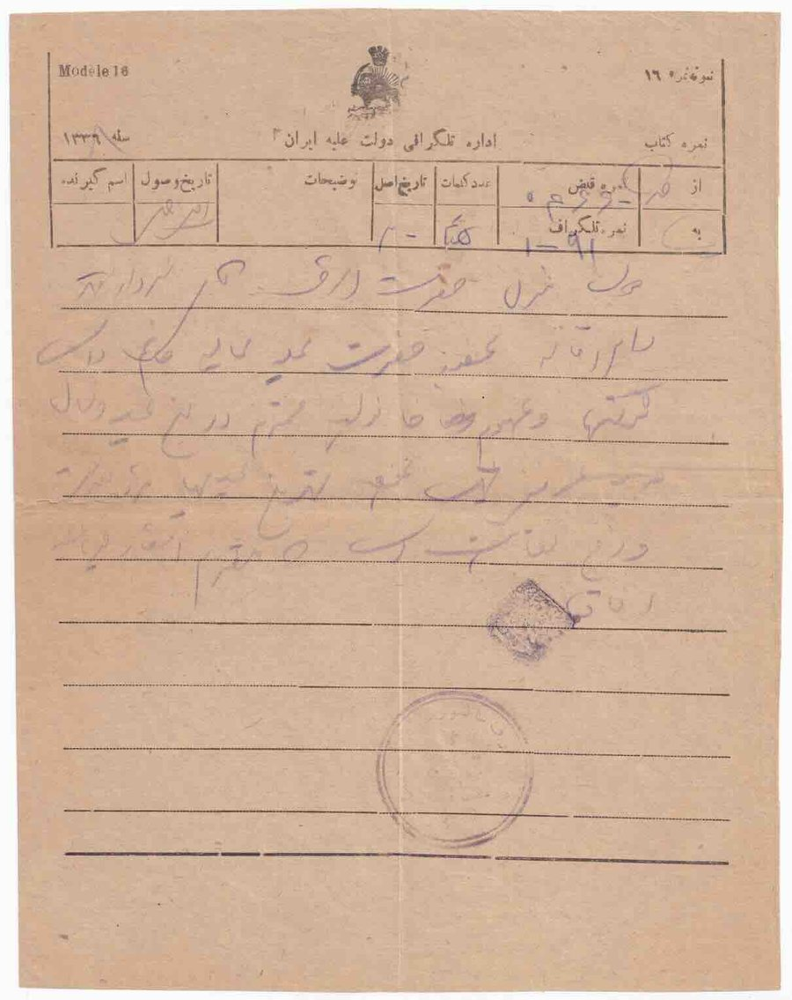

Skip to content
Persian Postal History
تاریخ پستی ایران
Home
Education
Rates
Censors
Forgeries
Collection
Resources
Censors
/
Persian Government
/
Newspaper or telegraph item
Cover 35 of 35 from Persian Government.
Previous in Persian Government
Tabriz to Kermanshah, 13 Jan 1921
Persian Government
35
1909
1910
1911
1912
1913
1914
1915
1916
1917
1918
1919
1920
1921
1922
1923
1924
1925
Newspaper or telegraph item

Front.
Previous: Tabriz to Kermanshah
Back to all Persian Government covers
Close